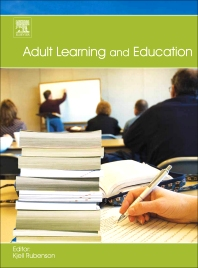

- Van Petegem, P., & Imbrecht, I. (2012). Organisatie Volwassenenonderwijs.
- Boeren, E., & Nicaise, I. (2009). Wie neemt deel en waarom?
- Knowles (2005). An andragogical process model for learning. (H6 Knowles)
- Knowles (2005). Andragogy in practice. (H7 Knowles)
- Jarvis, P. (2010). Perspectives on learning theory. (H5 Jarvis)
Planning lessen (vrijdagvoormiddag)
- 17 feb: Les 1
- 14 feb: Les 2
- 03 mrt: Les 3
- 10 mrt: Les 4
- 17 mrt: geen les
- 24 mrt: geen les
- 31 mrt: Les 5
|
- 07 apr: geen les
- 14 apr: geen les
- 21 apr: Les 6
- 28 apr: Les 7
- 05 mei: Les 8
- 12 mei: Les 9
- 19 mei: Les 10*
|
Adult Learning and Education

Elementen van de opdracht
- Schrijf samenvatting van het artikel/hoofdstuk
- Gebruik template (zie minerva)
- Maak een presentatie voor de groep
- Gebruik webslides of template (zie minerva)
- Layout mag anders, gebruik zelfde elementen
- Maximum 10 minuten (5 elk)
Assessing and evaluating

Assessing and evaluating
- Economisering
- Onderwijs (bewijs) als product
- Hogescholen en universiteiten willen meer studenten aantrekken
Assessing and evaluating
- Reclame
- Meer dan vroeger
- Al in 1993 “If you're buying training, make sure you get a receipt” (p. 210)
- Receipt = qualification
- Flexibilisering (o.m. afstandsonderwijs)
- Doorgedreven modularisering
- “sign” i.p.v. “education”
Assessing and evaluating
- Accreditation of prior experential learning (APEL), assessment (APL)
- Ook meer focus op accredidatie in de niet formele vormen
Assessment
- Assessment is complex proces
- Assessment houdt een zeker niveau van subjectiviteit in
- Assessment is not measurement
- Methodes om subjectiviteit te verminderen
A rationale for assessment
- Waarom?
- Diagnostic tool (formatief)
- Aangeven van een standaard
- Gelijke tests – vergelijken? – input!
- Wat werd verworven?
- Assessment als guide / indication
P2PU - Peer 2 Peer University
- Informatie van hun (vroegere) website: http://p2pu.org/
- “Learning for everyone, by everyone, about almost anything”
- The Peer 2 Peer University (P2PU) is an online community of open study groups for short university-level courses.
- Think of it as online book clubs for open educational resources. The P2PU helps you navigate the wealth
of open education materials that are out there, creates small groups of motivated learners, and supports the
design and facilitation of courses.
- Students and tutors get recognition for their work, and we are building pathways to formal credit as well.
- Open sharing and collaboration enable participation, innovation, and accountability. Our community is open so that everyone can
participate. Our content is open so that everyone can use it. Our model and technology are open to enable experimentation and ongoing
improvement. And our processes are open so that we are accountable to our community.
- P2PU is a community-centric project and our governance model reflects that. P2PU is driven by volunteers, who are involved in all
aspects of the project. As members of this community, we speak and act with civility, tolerance, and respect for other opinions, people,
and perspectives. We strive for quality as a community driven process of review, feedback and revision.
- Video: Peer 2 Peer University 2010 from P2P University on Vimeo.
Accreditatie?
- http://www.slideshare.net/houshuang/a-theoretical-approach-to-accreditation-of-open-education